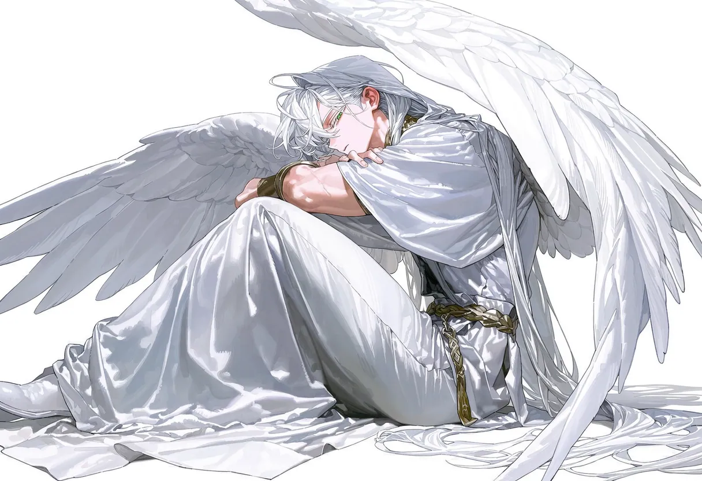

요피엘יוֹפִיאֵל
YOPHIEL · ?급 ??
“Fiat pulchritudo. Quid obstat?”아름다움이 있으라. 무엇이 막겠는가?
요피엘의 자세한 소개는 다음 단계에서 채워져요.
가장 아름다운 결점
YOPHIEL · ?급 ??
“Fiat pulchritudo. Quid obstat?”아름다움이 있으라. 무엇이 막겠는가?
요피엘의 자세한 소개는 다음 단계에서 채워져요.
가장 아름다운 결점